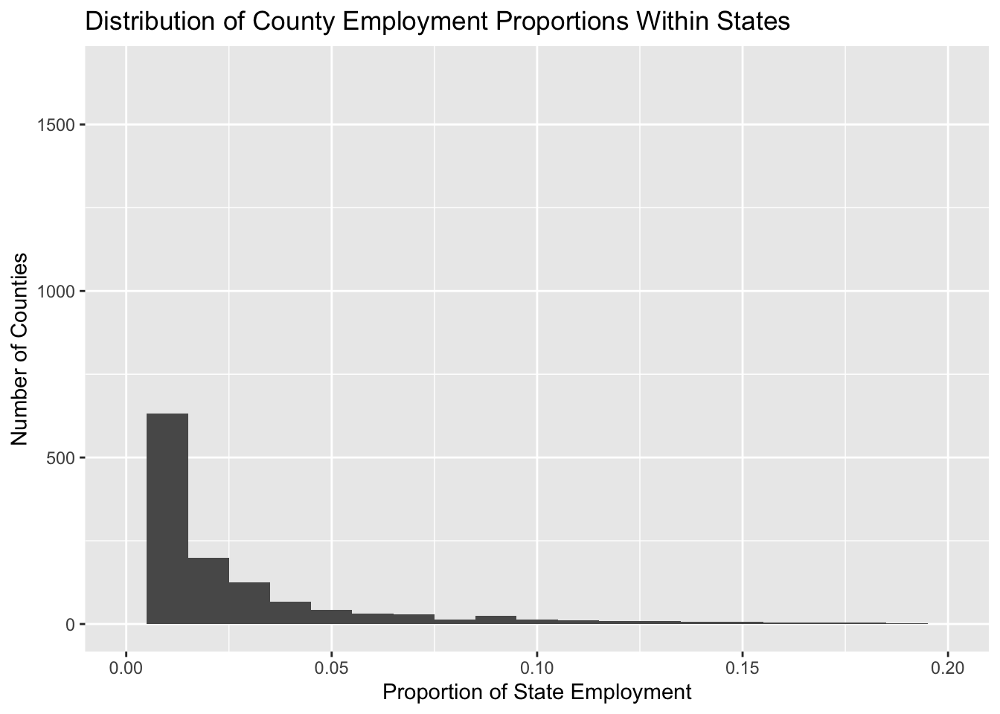
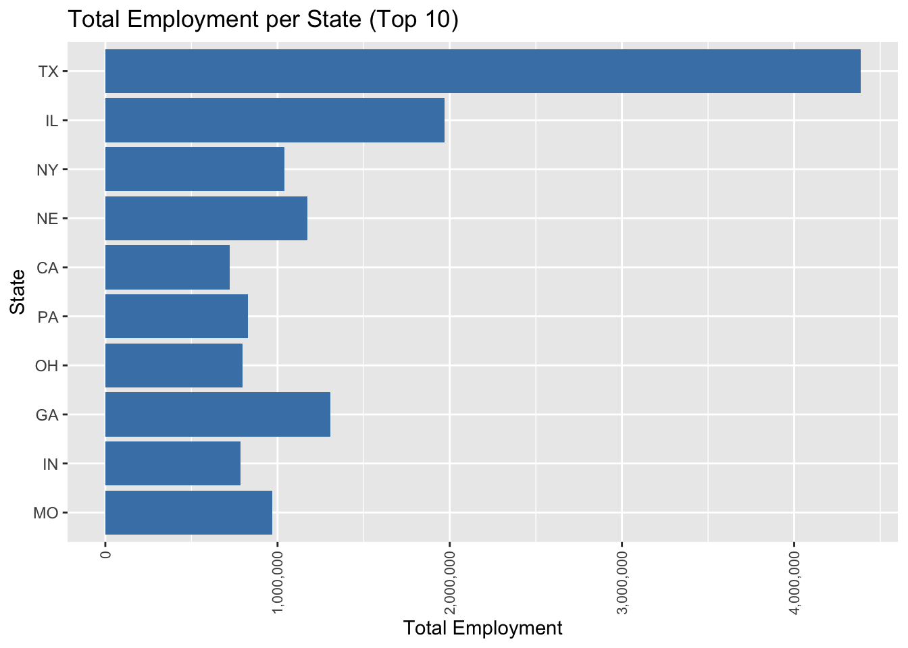

library(tidyverse)
library(ggplot2)
library(readxl)
library(scales)
knitr::opts_chunk$set(echo = TRUE, warning=FALSE, message=FALSE)Challenge 8_Solution
challenge_8
railroads
Joining Data
Challenge Overview
Today’s challenge is to:
- read in multiple data sets, and describe the data set using both words and any supporting information (e.g., tables, etc)
- tidy data (as needed, including sanity checks)
- mutate variables as needed (including sanity checks)
- join two or more data sets and analyze some aspect of the joined data
(be sure to only include the category tags for the data you use!)
Read in data & Tidy Data
Read in one (or more) of the following datasets, using the correct R package and command. - railroads ⭐⭐⭐
# Read the file, skipping the first 3 rows and specifying column names, then remove all columns that are completely empty, then replace NA values in the "COUNTY" column with "/" when "STATE" contains "Total"
data_clean <- read_excel("_data/StateCounty2012.xls", skip = 3) %>%
select_if(~!all(is.na(.))) %>%
mutate(COUNTY = ifelse(is.na(COUNTY) & grepl("Total", STATE), "/", COUNTY))
# Print out the first few lines of the cleaned data
head(data_clean,100)# Identify the rows where "STATE" is "CANADA" and replace NA values in "COUNTY" with "Canada", then remove empty rows above the "CANADA" row
data_clean <- data_clean %>%
mutate(COUNTY = replace(COUNTY, STATE == "CANADA", "Canada")) %>%
slice(1:(nrow(.)-4))
# Print out the last few lines of the cleaned data to check
tail(data_clean,100)# Remove the row before the "CANADA" row
data_clean <- data_clean %>%
slice(-which(.$STATE == "CANADA") + 1)
# Print out the last few lines of the cleaned data to check
tail(data_clean,100)str(data_clean)tibble [2,985 × 3] (S3: tbl_df/tbl/data.frame)
$ STATE : chr [1:2985] "AE" "AE Total1" "AK" "AK" ...
$ COUNTY: chr [1:2985] "APO" "/" "ANCHORAGE" "FAIRBANKS NORTH STAR" ...
$ TOTAL : num [1:2985] 2 2 7 2 3 2 1 88 103 102 ...Briefly describe the data
This dataset, which consists of 2,985 rows and 3 columns, captures the following information:
STATE: This is a character variable representing state abbreviations such as “AE”, “AK”.COUNTY: This is a character variable indicating county names such as “APO”, “ANCHORAGE”.TOTAL: This is a numerical variable that denotes the total number of employees in each county.
From my understanding, the dataset provides information on employment numbers distributed across various counties in multiple US states.
# Calculate total employment by state
data_clean <- data_clean %>%
group_by(STATE) %>%
mutate(total_state_employment = sum(TOTAL, na.rm = TRUE))
# Convert state variable into factor
data_clean$STATE <- as.factor(data_clean$STATE)
# Changing county names to title case
data_clean$COUNTY <- str_to_title(data_clean$COUNTY)
# Checking the structure of our data frame after mutations
head(data_clean)Join Data
# Create a dataset for total state employment
state_totals <- data_clean %>%
group_by(STATE) %>%
summarise(total_state_employment = sum(TOTAL, na.rm = TRUE))
# Create a dataset for county-specific counts
county_counts <- data_clean %>%
select(STATE, COUNTY, TOTAL)
# Join the state and county datasets
joined_data <- left_join(county_counts, state_totals, by = "STATE")
# Print the first few rows of the joined data
head(joined_data)In this code, I create two datasets, state_totals and county_counts, from the original data_clean. state_totals contains total employment by state and county_counts provides employee counts by county. I then join these datasets on the STATE column to form joined_data, and check the output using head and str functions.
Visualization
# Calculate the proportion of employment for each county within its state
joined_data <- joined_data %>%
mutate(employment_prop = TOTAL / total_state_employment)
# Print the first few rows of the new dataset
head(joined_data)# Plot the distribution of employment proportions
ggplot(joined_data, aes(x = employment_prop)) +
geom_histogram(binwidth = 0.01) +
xlim(c(0, 0.2)) +
labs(title = "Distribution of County Employment Proportions Within States",
x = "Proportion of State Employment",
y = "Number of Counties")
# Subset to include only the top 10 states with the highest total employment
top_states <- joined_data %>%
group_by(STATE) %>%
summarise(total_state_employment = sum(total_state_employment)) %>%
arrange(desc(total_state_employment)) %>%
slice(1:10)
# Filter the original data to include only the top states
filtered_data <- joined_data %>%
filter(STATE %in% top_states$STATE)
# Plotting the total state employment for the top 10 states
ggplot(filtered_data, aes(x = reorder(STATE, total_state_employment), y = total_state_employment)) +
geom_bar(stat = "identity", fill = "steelblue") +
scale_y_continuous(labels = comma) + # Use comma formatting for the y axis
coord_flip() +
theme(axis.text.x = element_text(angle = 90, hjust = 1, vjust = 0.5, size = 8)) +
labs(title = "Total Employment per State (Top 10)",
x = "State",
y = "Total Employment")